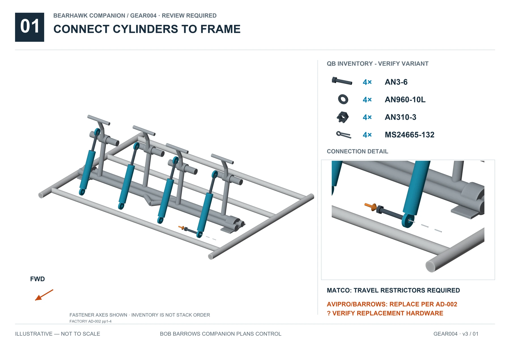
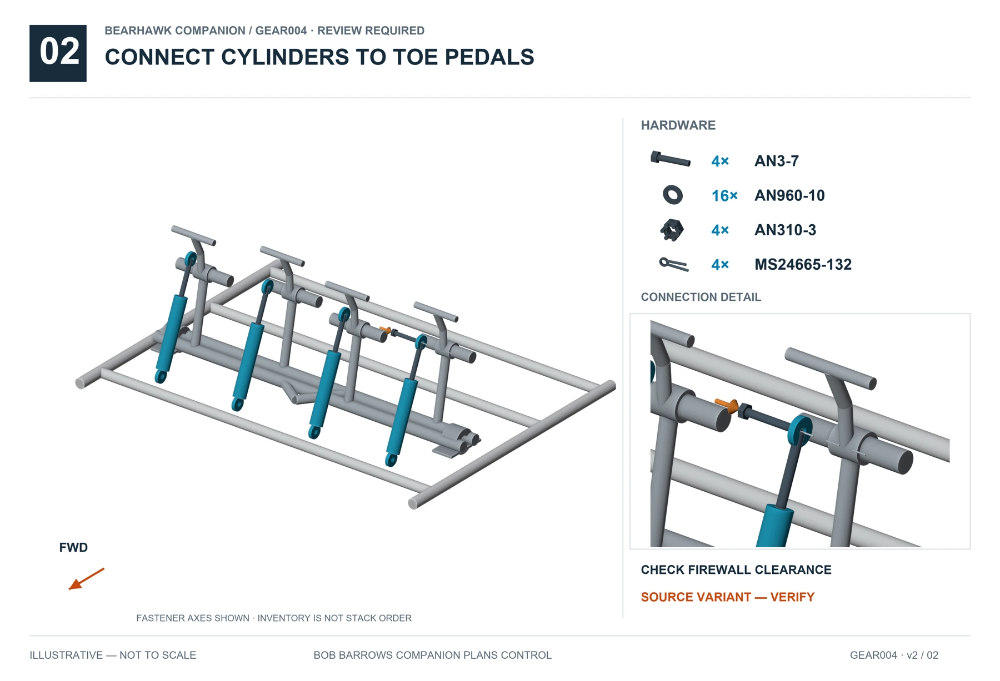

15 · LANDING-GEAR · GEAR004 · v2
Brake Master Cylinders
REVIEW REQUIREDSupported relationships are illustrated. Resolve the open items below before completing affected operations. Hardware inventories do not specify unresolved stack order.
Tap an illustration for full-size viewing.
Connect cylinders to frame
Full size ↗
Connect cylinders to toe pedals
Full size ↗
Open items
- BH-REV-022 · Upper-joint washers depend on master-cylinder variant.
Sources and visual references
- Companion plan29
- BHManual-Fuselage1-25Rev1.pdf pp19–20
- Companion Hardware Callout Rev2, supplied Companion+Hardware+Customer+-+Sheet1-2.pdf p1 HK-RS4